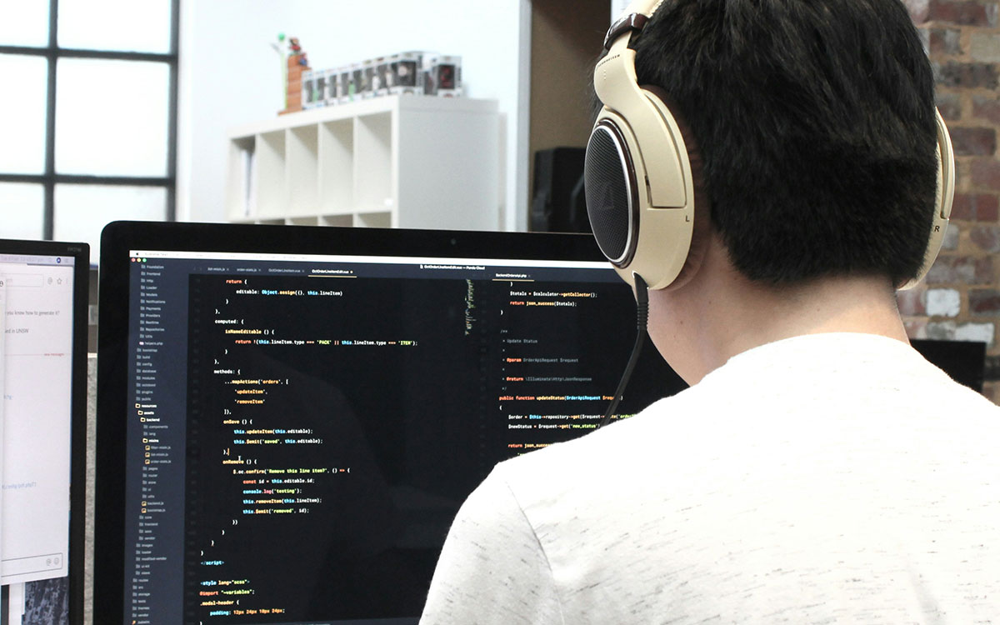
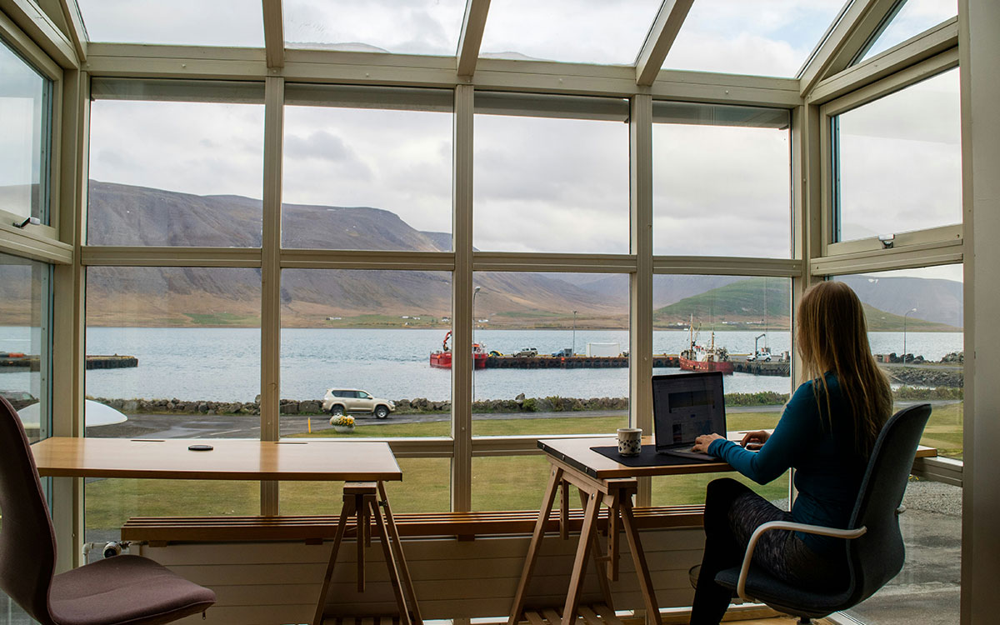

さとうしょうこは、宇部で暮らす一人ひとりが、自分らしく学び、働き、子育てし、挑戦できるまちを目指して活動しています。
宇部で、挑戦する人を増やしたい。
28歳の時に地元を離れ東京へ。エンジニアとしてIT業界で働き、技術広報やコミュニティ運営に携わり、多くの人が新しい一歩を踏み出す瞬間を見てきました。 技術を学ぶ機会、新しい仕事との出会い、挑戦を応援してくれる仲間とのつながり。そうした環境が、人の可能性を大きく広げることを実感してきました。 そして13年の時を経て、今度は自分が育った地元・宇部に、その経験を還元したいと思うようになりました。
振り返ると、私自身も決して順風満帆な人生ではありませんでした。仕事と子育てを両立しながら、悩み、迷い、それでも一歩ずつ挑戦を続けてきました。エンジニアとして技術を学び、コミュニティ活動を通じて全国の仲間と出会い、そして起業にも挑戦しました。 だからこそ強く感じています。 人の可能性は、生まれた環境や年齢で決まるものではありません。
学ぶ機会があること。 挑戦を応援してくれる人がいること。 困ったときに相談できる場所があること。
そうした環境があれば、人は何歳からでも、新しい一歩を踏み出すことができます。
しかし今、宇部では人口減少や若者の流出が進み、「やりたいことがあれば都市部へ」という考え方が当たり前になりつつあります。 私は、宇部に暮らしながらでも学び、働き、子育てをし、自分らしく挑戦できる環境を増やしたい。
子どもたちが未来に希望を持てるまち。 働く世代が新しいことに挑戦できるまち。 子育てや介護をしながらでも、自分らしく活躍できるまち。 年齢や性別、立場に関係なく、一人ひとりの挑戦が応援されるまち。
そんな宇部を、皆さんと一緒につくっていきたいと思っています。
地域の声を聞き、現場に足を運び、一つひとつの課題に向き合いながら、未来につながる選択肢を増やしていく。 そして、宇部から新しい挑戦が生まれ続ける地域を目指していく。
誰もが挑戦できる宇部へ。
その実現に向けて、皆さんとともに歩んでまいります。

子どもたちが自分の可能性を広げられる学びの環境づくりを進めます。

地域産業と新しい働き方をつなぎ、宇部で挑戦できる仕事を増やします。
子育て、仕事、暮らしを一人で抱え込まない地域づくりを目指します。
市民の声が届きやすく、わかりやすく開かれた市政を目指します。
宇部にゆかりを持ち、IT業界でエンジニア、技術広報、コミュニティ運営に携わる。2024年に自身の会社を設立。
技術コミュニティやイベント運営を通じて、人と人がつながり、新しい挑戦が生まれる場づくりに取り組んできました。
これまでの経験を地域に還元し、宇部で暮らす人たちが自分らしく挑戦できるまちづくりを進めていきます。
さとうしょうこ後援会では、活動を応援してくださる方を募集しています。 LINE公式アカウントでは、活動報告やイベント情報をお届けします。